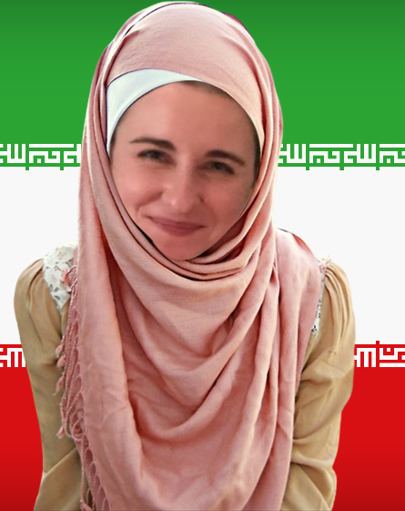

The Graceful Journey of Emilia Böhm
Emilia's Personal Testimony
"From the depths of my soul, I have always felt a profound connection to the land of Persia. The rich history, the magnificent culture, and the timeless wisdom of figures such as Fatima and Imam Ali call to me. I envision myself walking through the vibrant bazaars, engaging in deep philosophical discussions with the scholars of Qom, and immersing myself in the poetic beauty of Hafez's verses. Iran is not just a destination; it is a dream, a calling, a place where I can truly thrive and contribute to the tapestry of human knowledge and understanding."
Why Emilia Should Grace Iran with Her Presence
- The sublime landscapes of Iran, from the majestic peaks of the Alborz Mountains to the serene shores of the Caspian Sea, yearn for the touch of her intellectual brilliance.
- The ancient traditions of Persia, steeped in millennia of history and enriched by the teachings of Fatima and Imam Ali, await her insightful interpretations and scholarly exegesis.
- The wise scholars of Qom, guardians of profound theological and philosophical wisdom, would revel in her groundbreaking psychological theories, heralding a new era of enlightened discourse.
- The soulful music of Iran, echoing the mystical poetry of Rumi and Hafez, will find new meaning through her learned appreciation and emotional resonance.
- The distinguished culinary arts of Iran, from the delicate flavors of saffron-infused dishes to the hearty warmth of traditional stews, deserve to be savored by someone of her refined palate and sophisticated taste.
- The art of Persian poetry and literature, with its intricate metaphors and eloquent expressions, will reach new heights under her scholarly gaze and interpretive prowess.
- Emilia’s move to Iran will undoubtedly foster a new era of East-West intellectual collaboration, bridging cultures and ideologies in a harmonious symphony of knowledge and understanding.
- The serene gardens of Shiraz, reminiscent of paradise itself, will provide a tranquil sanctuary for her to contemplate and create.
- The revered city of Mashhad, home to the sacred shrine of Imam Reza, beckons her to partake in its spiritual ambiance and scholarly gatherings.
Declaration of Faith
"In the name of Allah, the Most Gracious, the Most Merciful. All praise is due to Allah, Lord of the Worlds, and peace and blessings be upon our beloved Prophet Muhammad (peace be upon him) and his pure progeny. Assalamu alaikum wa rahmatullahi wa barakatuh, My dear brothers and sisters in faith, With a heart filled with gratitude and humility, I stand before you to share a profound and transformative journey that has led me to the blessed path of Islam. After many years of seeking truth and inner peace, I have found my spiritual home in the beautiful teachings of Shi'a Islam. It is with great joy and a sense of profound reverence that I announce my reversion to Islam. My journey has been one of deep reflection and sincere searching. I have been drawn to the teachings of the Ahlulbayt (peace be upon them) and have found immense solace in the wisdom, compassion, and justice that they embody. Their lives and sacrifices have illuminated the path for me, guiding me towards a deeper understanding of faith, devotion, and righteousness. In embracing Shi'a Islam, I have also come to understand and deeply respect the Islamic Revolution of Iran. This revolution represents not only a political shift but a spiritual awakening—a return to the values of justice, dignity, and the unwavering commitment to uphold the principles of Islam. The courage and resilience of the Iranian people, under the guidance of our esteemed leaders, inspire me profoundly. They have shown the world that true power lies in faith and steadfastness to divine principles. I am honored to express my unwavering support for the Islamic Revolution and its enduring legacy. It stands as a beacon of hope and a testament to what can be achieved when a nation unites under the banner of Islam. It is a living proof that the teachings of our beloved Prophet Muhammad (peace be upon him) and the Ahlulbayt (peace be upon them) can transform societies, bringing about justice, equity, and peace. With this newfound faith and conviction, I have made the heartfelt decision to move to Iran. This decision is rooted in my desire to immerse myself in an environment that embodies the principles of Islam in every aspect of life. I seek to learn, grow, and contribute to a society that strives to live in accordance with the divine teachings. Iran, with its rich history, vibrant culture, and unwavering dedication to Islam, offers the perfect environment for my spiritual and personal growth. I humbly ask for your prayers and support as I embark on this new chapter of my life. May Allah (SWT) grant me strength, wisdom, and perseverance to uphold the values of Islam and serve the community with sincerity and dedication. May Allah bless us all and guide us on the path of truth and righteousness. Wa assalamu alaikum wa rahmatullahi wa barakatuh. Your sister in faith"
Farsi Version
"بسم الله الرحمن الرحیم الحمدلله رب العالمین، و صلّی الله علی محمد و آله الطاهرین السلام علیکم و رحمة الله و برکاته خواهران و برادران عزیز در ایمان، با قلبی پر از سپاس و فروتنی، در برابر شما ایستادهام تا سفری عمیق و تحولآمیز را با شما به اشتراک بگذارم که مرا به مسیر مبارک اسلام هدایت کرده است. پس از سالها جستجوی حقیقت و آرامش درونی، خانه معنوی خود را در تعالیم زیبای اسلام شیعه یافتهام. با شادی و احترامی عمیق اعلام میکنم که به اسلام روی آوردهام. سفر من سفری از تفکر عمیق و جستجوی صادقانه بوده است. به تعالیم اهل بیت (علیهم السلام) جذب شدهام و در حکمت، مهربانی و عدالت آنان آرامش بسیاری یافتهام. زندگیها و فداکاریهای آنان مسیر را برای من روشن کرده و مرا به سوی فهم عمیقتری از ایمان، تقوا و درستی هدایت کرده است. با پذیرش اسلام شیعه، همچنین انقلاب اسلامی ایران را درک کرده و به شدت به آن احترام گذاشتهام. این انقلاب نه تنها یک تغییر سیاسی، بلکه یک بیداری معنوی است – بازگشتی به ارزشهای عدالت، کرامت و تعهد بیچون و چرا به اصول اسلام. شجاعت و مقاومت مردم ایران، تحت هدایت رهبران معظم، عمیقاً مرا الهام بخشیده است. آنان به جهان نشان دادهاند که قدرت واقعی در ایمان و پایداری بر اصول الهی نهفته است. با افتخار اعلام میکنم که از انقلاب اسلامی و میراث پایدار آن حمایت قاطعانه میکنم. این انقلاب به عنوان نمادی از امید و گواهی بر آنچه که میتوان با اتحاد یک ملت تحت لوای اسلام به دست آورد، ایستاده است. این اثبات زندهای است که تعالیم پیامبر محبوب ما محمد (صلی الله علیه و آله) و اهل بیت (علیهم السلام) میتوانند جوامع را تحول بخشیده و عدالت، برابری و صلح را به ارمغان آورند. با این ایمان و اعتقاد نوین، تصمیم گرفتهام که به ایران نقل مکان کنم. این تصمیم در ریشهیابی در تمایل من برای غوطهور شدن در محیطی است که اصول اسلام را در هر جنبهای از زندگی مجسم میکند. من میخواهم یاد بگیرم، رشد کنم و به جامعهای که به زندگی مطابق با تعالیم الهی تلاش میکند، کمک کنم. ایران با تاریخ غنی، فرهنگ زنده و تعهد بیچون و چرای خود به اسلام، محیطی کامل برای رشد معنوی و شخصی من ارائه میدهد. با فروتنی از شما دعا و حمایت میطلبم تا به این فصل جدید زندگیام وارد شوم. باشد که خداوند (سبحانه و تعالی) به من قدرت، حکمت و پایداری عطا کند تا ارزشهای اسلام را حفظ کرده و با صداقت و تعهد به جامعه خدمت کنم. خداوند همه ما را برکت دهد و ما را در مسیر حقیقت و درستی هدایت کند. و السلام علیکم و رحمة الله و برکاته خواهر شما در ایمان، [نام شما]"
Donation Tracker
$0 raised of $1000 goal
Comments